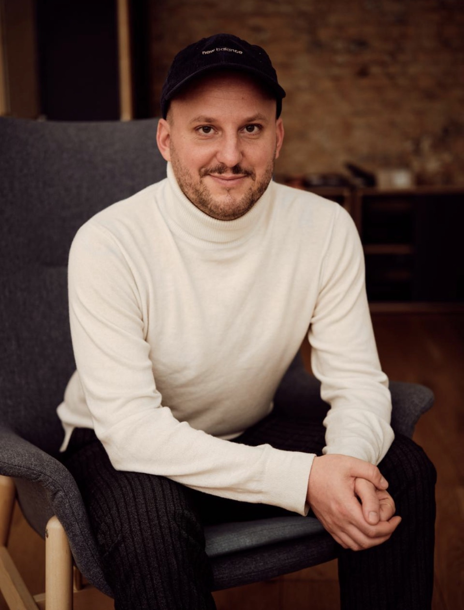

Die nächste Runde
25 CHANGE MANAGEMENT EXPERTS
2. und 3. Dezember 2026 · Termin bestätigt
Veränderung im Versicherungsunternehmen gestalten: Erfahrungen teilen, Entscheidungen schärfen und nächste Schritte entwickeln.
Edition entdecken25 Menschen · 1½ Tage · Köln
Das persönliche Expertentreffen für Fach- und Führungskräfte aus Versicherern, Maklerpools und Versicherungsvertrieben.
Besprich Deine Herausforderungen mit Menschen, die sie verstehen. Nimm neue Perspektiven, konkrete nächste Schritte und wertvolle Kontakte mit.
Deine Edition auswählenWelches Thema beschäftigt Dich?
Fachliche Verantwortung zählt – auch ohne Führungsposition. Wir bringen Erfahrungen und Fragen zusammen, die sich sinnvoll ergänzen.
Die nächste Runde
2. und 3. Dezember 2026 · Termin bestätigt
Veränderung im Versicherungsunternehmen gestalten: Erfahrungen teilen, Entscheidungen schärfen und nächste Schritte entwickeln.
Edition entdecken28./29. Januar 2027 (vorläufig) · Termin vorläufig
Edition entdecken18./19. März 2027 (vorläufig) · Termin vorläufig
Edition entdecken14./15. April 2027 (vorläufig) · Termin vorläufig
Edition entdecken9./10. Juni 2027 (vorläufig) · Termin vorläufig
Edition entdecken15./16. September 2027 (vorläufig) · Termin vorläufig
Edition entdecken7./8. Oktober 2027 (vorläufig) · Termin vorläufig
Edition entdeckenPersönlich begleitet
Von der Vorbereitung bis zum Wiedersehen: Wir achten darauf, dass jede Perspektive gehört wird und Du mit etwas Greifbarem nach Hause gehst.
Mehr über die Menschen hinter 25 EXPERTS
Zeit, die weiterwirkt
Deine Frage fließt in ein gemeinsames Dossier ein.
25 Teilnehmer, ehrliche Perspektiven und konkrete Fälle.
Aperitif und Dinner geben Gesprächen Zeit.
Nach sechs Wochen sehen wir uns moderiert online wieder.
450 € netto · 535,50 € inkl. 19 % USt. pro Person bei verbindlicher Buchung.
Enthalten: 1½ Tage Programm, Vorbereitung, Arbeitsmaterialien, Verpflegung während des Programms, gemeinsames Dinner und Online-Wiedersehen. Anreise und Übernachtung organisierst Du selbst.
Das Format im DetailFür Menschen mit fachlicher oder personeller Verantwortung bei Versicherern, Maklerpools und Versicherungsvertrieben. Entscheidend sind Deine Erfahrung und Dein Anliegen, nicht Dein Titel. Pro Unternehmen nehmen höchstens zwei Personen teil.
Du fragst Deine Teilnahme kostenfrei an. Wir melden uns innerhalb von zwei Werktagen persönlich. Nach Zusage entscheidest Du, ob Du verbindlich buchen möchtest. Erst diese Buchung begründet eine Zahlungspflicht.
Erfahrungen dürfen weitergedacht werden; Aussagen werden außerhalb der Runde keiner Person oder Organisation zugeordnet. Öffentliche Ergebnisse werden nur nach Freigabe geteilt.
Unser KodexIm SESSEL HUB, Kranhaus Nord, Im Zollhafen 12, Köln. Den gemeinsamen Abend verbringen wir im Gilden im Zims. Ort und Ablauf findest Du auf Deiner Editionsseite.